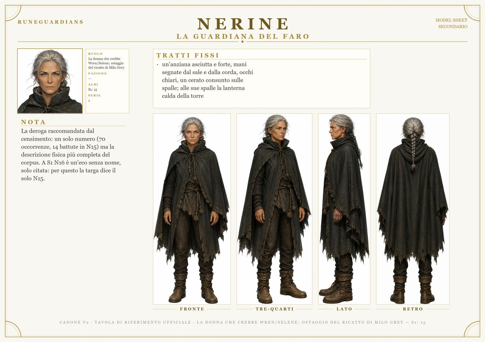

Nerine / La Guardiana del faro

RuoloLa donna che crebbe Wren/Selene; ostaggio del ricatto di Milo Grey
EraI
Appare inS1 N15
un'anziana asciutta e forte, mani segnate dal sale e dalla corda, occhi chiari, un cerato consunto sulle spalle; alle sue spalle la lanterna calda della torre